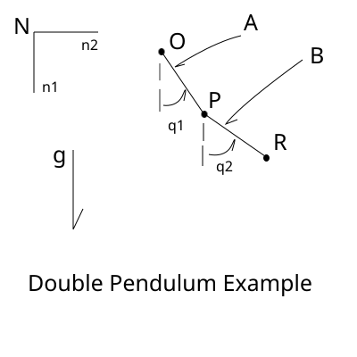
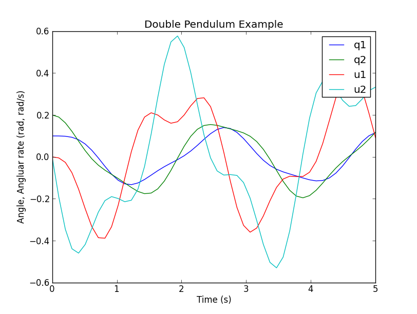
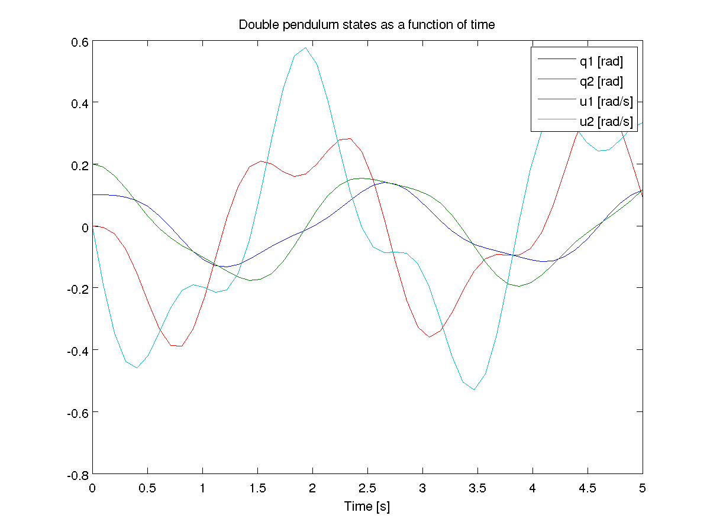
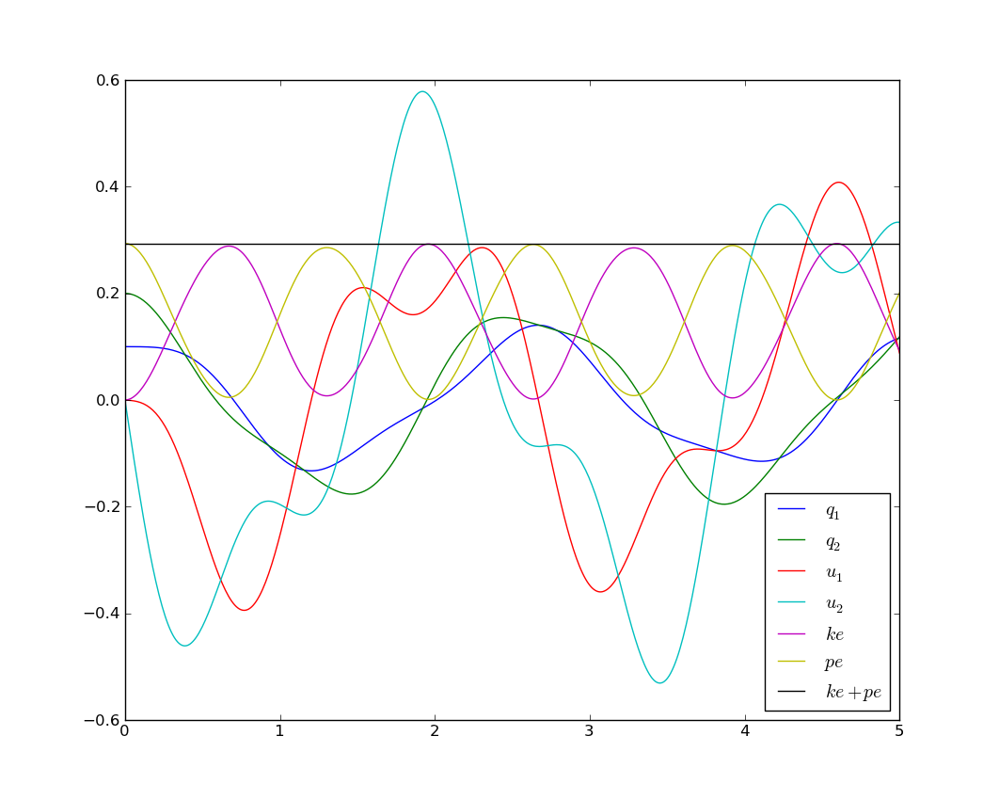

The double pendulum is a classic example of a chaotic system. It is a well
documented and understood example. Read [here](wp>Double_pendulum) for more
details. This example has 2 particles of the same mass, on massless links of the same
length.  Running the above code will give the following python code output in the
console (order is \(\dot{q}_1\), \(\dot{q}_2\), \(\dot{u}_1\),
\(\dot{u}_2\)): These equations are the four first order differential equations that completely
described the systems motion at any time. These equations can also be computed with the SciPy libraries. You can use the experimental code output function. This shows how the code
output would work for the double pendulum example. You can either put this at
the end of your script, or run it while in the interpreter. You can supply a file name for the settings file, otherwise a default will be
provided. If an alternative settings file name is given, that will be the
default file name in the integration file. Note that once the settings file has
been written once, it does not need to be written again. Additionally, multiple
settings files can be written; the most recent one will be the default settings
file in the integration file. You can either run the file from the interpreter, as “run outfile.py”, from the
command line as “python outfile.py”, or from the command line specifying a
settings file as “python outfile.py settings_file.csv”.  A integration routine can be written in Matlab in a similar fashion as Scipy.
The syntax just varies slightly. The complete m-file can be downloaded from
[double_pendulum.m](https///github.com/gilbertgede/pydy_examples/blob/master/double_pendulum/double_pendulum.m). The first step is to write the a function that returns the derivatives of the
states as a function of time and the current state: The equations of motion, xd, can be directly copied from the
sympy.mechanics.physics output above, except that you must change the power
operator, ‘**’, from python to the power operator used in Matlab, ‘^’. You now can use one of Matlab’s built-in ode integration routines, such as
ode45, to integrate the equations of motion and get the time histories of the
states. The states as a function of time are now available. Use Matlab’s plotting functions to visualize the motion.  Sometimes it is useful, for performance reasons, to write the main numerical
part of your code in a compiled language like C, C++, or Fortran. This example
illustrates how to do the main part of the simulation in C++, but then do the
plotting with matplotlib. double_pendulum.h The SymPy function ccode() is a very handy way to take a sympy expression and
convert it to a C statement that will compile. Using this function, we can
form the ODE function, as well as kinetic and potential energy functions for
the double pendulum. All of the functions in the following file were obtained
by a simple copy/paste of the output of the ccode() function in Sympy. double_pendulum.cc To numerically integrate the equations, and save the time history of the states
and energies to a data file, our main driver is as follows: When you run this, a binary data file will be created in your current working
directory. You can plot the data with the following Python code that makes use
of Matplotlib: Which results in the following nice plot:  Matplotlib 1.1 has an animation module that makes 2D animation easy. Check out
this tutorial for animating a double pendulum: All of the source code for the examples can be found in
https://github.com/gilbertgede/pydy_examples.A Double Pendulum Example¶
Problem Description¶
Deriving the equations of motion with SymPy¶
from sympy import symbols
from sympy.physics.mechanics import *
q1, q2 = dynamicsymbols('q1 q2')
q1d, q2d = dynamicsymbols('q1 q2', 1)
u1, u2 = dynamicsymbols('u1 u2')
u1d, u2d = dynamicsymbols('u1 u2', 1)
l, m, g = symbols('l m g')
N = ReferenceFrame('N')
A = N.orientnew('A', 'Axis', [q1, N.z])
B = N.orientnew('B', 'Axis', [q2, N.z])
A.set_ang_vel(N, u1 * N.z)
B.set_ang_vel(N, u2 * N.z)
O = Point('O')
P = O.locatenew('P', l * A.x)
R = P.locatenew('R', l * B.x)
O.set_vel(N, 0)
P.v2pt_theory(O, N, A)
R.v2pt_theory(P, N, B)
ParP = Particle('ParP', P, m)
ParR = Particle('ParR', R, m)
kd = [q1d - u1, q2d - u2]
FL = [(P, m * g * N.x), (R, m * g * N.x)]
BL = [ParP, ParR]
KM = KanesMethod(N, q_ind=[q1, q2], u_ind=[u1, u2], kd_eqs=kd)
(fr, frstar) = KM.kanes_equations(FL, BL)
kdd = KM.kindiffdict()
mm = KM.mass_matrix_full
fo = KM.forcing_full
qudots = mm.inv() * fo
qudots = qudots.subs(kdd)
qudots.simplify()
mechanics_printing()
mprint(qudots)
[u1]
[u2]
[(-g*sin(q1)*sin(q2)**2 + 2*g*sin(q1) - g*sin(q2)*cos(q1)*cos(q2) + 2*l*u1**2*sin(q1)*cos(q1)*cos(q2)**2 - l*u1**2*sin(q1)*cos(q1) - 2*l*u1**2*sin(q2)*cos(q1)**2*cos(q2) + l*u1**2*sin(q2)*cos(q2) + l*u2**2*sin(q1)*cos(q2) - l*u2**2*sin(q2)*cos(q1))/(l*(sin(q1)**2*sin(q2)**2 + 2*sin(q1)*sin(q2)*cos(q1)*cos(q2) + cos(q1)**2*cos(q2)**2 - 2))]
[(-sin(q1)*sin(q2)/2 - cos(q1)*cos(q2)/2)*(2*g*l*m*sin(q1) - l**2*m*(-sin(q1)*cos(q2) + sin(q2)*cos(q1))*u2**2)/(l**2*m*(sin(q1)*sin(q2)/2 + cos(q1)*cos(q2)/2)*(sin(q1)*sin(q2) + cos(q1)*cos(q2)) - l**2*m) + (g*l*m*sin(q2) - l**2*m*(sin(q1)*cos(q2) - sin(q2)*cos(q1))*u1**2)/(l**2*m*(sin(q1)*sin(q2)/2 + cos(q1)*cos(q2)/2)*(sin(q1)*sin(q2) + cos(q1)*cos(q2)) - l**2*m)]
Integration with Scipy¶
# append the following code to your script, or run it in the interpreter after you run your script
co = code_output(KM, "outfile")
co.get_parameters()
# output should be [m, g, l]
co.give_parameters([1, 9.81, 1])
co.get_initialconditions()
# output should be [q1, q2, u1, u2]
co.give_initialconditions([.1, .2, 0, 0])
co.give_time_int([0,10,1000])
co.write_settings_file()
co.write_rhs_file('SciPy')
run outfile.py
Integration with Matlab¶
function xd = state_derivatives(t, x, m, l, g)
%function xd = state_derivatives(t, x, m, l, g)
% Returns the derivatives of the states as a function of the current state
% and time.
%
% Parameters
% ----------
% t : double
% Current time.
% x : vector, (4, 1)
% Current state.
% m : double
% The mass of each particle.
% l : double
% Length of each link.
% g : double
% Acceleratoin due to gravity.
%
% Returns
% -------
% xd : matrix, 4 x 1
% The derivatives of the states in this order [q1, q2, u1, u2].
% Unpack the variables so that you can use the sympy equations as is.
q1 = x(1);
q2 = x(2);
u1 = x(3);
u2 = x(4);
% Initialize a vector for the derivatives.
xd = zeros(4, 1);
% Calculate the derivatives of the states. These equations can be copied
% directly from the sympy output but be sure to print with `mprint` in
% sympy.physics.mechanics to remove the `(t)` and use Matlab's find and
% replace and regular expressions to change the python `**` to the matlab
% `^`.
xd(1) = u1;
xd(2) = u2;
xd(3) = (-g * sin(q1) * sin(q2)^2 + 2 * g * sin(q1) - g * sin(q2) * ...
cos(q1) * cos(q2) + 2 * l * u1^2 * sin(q1) * cos(q1) * ...
cos(q2)^2 - l * u1^2 * sin(q1) * cos(q1) - 2 * l * u1^2 * ...
sin(q2) * cos(q1)^2 * cos(q2) + l * u1^2 * sin(q2) * cos(q2) + ...
l * u2^2 * sin(q1) * cos(q2) - l * u2^2 * sin(q2) * cos(q1)) / ...
(l * (sin(q1)^2 * sin(q2)^2 + 2 * sin(q1) * sin(q2) * cos(q1) * ...
cos(q2) + cos(q1)^2 * cos(q2)^2 - 2));
xd(4) = (-sin(q1) * sin(q2) / 2 - cos(q1) * cos(q2) / 2) * (2 * g * ...
l * m * sin(q1) - l^2 * m * (-sin(q1) * cos(q2) + sin(q2) * ...
cos(q1)) * u2^2) / (l^2 * m * (sin(q1) * sin(q2) / 2 + cos(q1) * ...
cos(q2) / 2) * (sin(q1) * sin(q2) + cos(q1) * cos(q2)) - l^2 * m) + ...
(g * l * m * sin(q2) - l^2 * m * (sin(q1) * cos(q2) - sin(q2) * ...
cos(q1)) * u1^2) / (l^2 * m * (sin(q1) * sin(q2) / 2 + cos(q1) * ...
cos(q2) / 2) * (sin(q1) * sin(q2) + cos(q1) * cos(q2)) - l^2 * m);
% Integrate the equations over from 0 to 5 seconds with 50 steps.
timeSpan = linspace(0.0, 5.0, 50);
% Set initial angles in radians and the initial speeds to zero.
initialConditions = [0.1, 0.2, 0.0, 0.0];
% Define particles' mass, pendulums' length, and the acceleration due to
% gravity.
m = 1.0;
l = 1.0;
g = 9.8;
% Create a function handle to an anonymous function which which can pass the
% parameters.
f = @(t, x) state_derivatives(t, x, m, l, g);
% Integrate the equations of motion with default integration settings.
[t, x] = ode45(f, timeSpan, initialConditions);
% Plot the results.
fig = figure();
plot(t, x)
title('Double pendulum states as a function of time')
xlabel('Time [s]')
legend('q1 [rad]', 'q2 [rad]', 'u1 [rad/s]', 'u2 [rad/s]')
Simulating with C/C++, GSL, plotting with matplotlib¶
#ifndef DOUBLE_PENDULUM_H
#define DOUBLE_PENDULUM_H
double double_pendulum_ke(const double x[4], const double params[3]);
double double_pendulum_pe(const double x[4], const double params[3]);
int double_pendulum_ode(double t, const double x[], double dxdt[], void *_params);
#endif
#include "double_pendulum.h"
#include <cmath>
#include <gsl/gsl_errno.h>
#include <gsl/gsl_odeiv2.h>
double double_pendulum_ke(const double x[4], const double params[3])
{
double m = params[0], l = params[2];
return 1.0*pow(l, 2)*(sin(x[0])*sin(x[1]) + cos(x[0])*cos(x[1]))*x[2]*x[3]/m + 1.0*pow(l, 2)*pow(x[2], 2)/m + 0.5*pow(l, 2)*pow(x[3], 2)/m;
}
double double_pendulum_pe(const double x[4], const double params[3])
{
double m = params[0], g = params[1], l = params[2];
return -g*m*(2*l*cos(x[0]) + l*cos(x[1]) - 3*l);
}
int double_pendulum_ode(double t, const double x[], double dxdt[], void *_params)
{
double const *params = static_cast<double const *>(_params);
double m = params[0], g = params[1], l = params[2];
dxdt[0] = x[2];
dxdt[1] = x[3];
dxdt[2] = (-g*sin(x[0])*pow(sin(x[1]), 2) + 2*g*sin(x[0]) - g*sin(x[1])*cos(x[0])*cos(x[1]) + 2*l*pow(x[2], 2)*sin(x[0])*cos(x[0])*pow(cos(x[1]), 2) - l*pow(x[2], 2)*sin(x[0])*cos(x[0]) - 2*l*pow(x[2], 2)*sin(x[1])*pow(cos(x[0]), 2)*cos(x[1]) + l*pow(x[2], 2)*sin(x[1])*cos(x[1]) + l*pow(x[3], 2)*sin(x[0])*cos(x[1]) - l*pow(x[3], 2)*sin(x[1])*cos(x[0]))/(l*(pow(sin(x[0]), 2)*pow(sin(x[1]), 2) + 2*sin(x[0])*sin(x[1])*cos(x[0])*cos(x[1]) + pow(cos(x[0]), 2)*pow(cos(x[1]), 2) - 2)) ;
dxdt[3] = (-sin(x[0])*sin(x[1])/2 - cos(x[0])*cos(x[1])/2)*(2*g*l*m*sin(x[0]) - pow(l, 2)*m*(-sin(x[0])*cos(x[1]) + sin(x[1])*cos(x[0]))*pow(x[3], 2))/(pow(l, 2)*m*(sin(x[0])*sin(x[1])/2 + cos(x[0])*cos(x[1])/2)*(sin(x[0])*sin(x[1]) + cos(x[0])*cos(x[1])) - pow(l, 2)*m) + (g*l*m*sin(x[1]) - pow(l, 2)*m*(sin(x[0])*cos(x[1]) - sin(x[1])*cos(x[0]))*pow(x[2], 2))/(pow(l, 2)*m*(sin(x[0])*sin(x[1])/2 + cos(x[0])*cos(x[1])/2)*(sin(x[0])*sin(x[1]) + cos(x[0])*cos(x[1])) - pow(l, 2)*m);
return GSL_SUCCESS;
}
#include <fstream>
#include <gsl/gsl_odeiv2.h>
#include "double_pendulum.h"
struct simdata { double t, x[4], pe, ke; }; // t, q1, q2, u1, u2, pe, ke
int main(int argc, char *argv[]) {
double params[] = {1.0, 9.81, 1.0}; // m, g, l
simdata s = {0.0, {0.1, 0.2, 0.0, 0.0}}; // initial time and state
s.ke = double_pendulum_ke(s.x, params); // initial kinetic energy
s.pe = double_pendulum_pe(s.x, params); // intial potential energy
const double tf = 5.0; // final time
const int N = 501; // number of points
// GSL setup code
gsl_odeiv2_system sys = {double_pendulum_ode, NULL, 4, params};
gsl_odeiv2_driver * d = gsl_odeiv2_driver_alloc_y_new(&sys, gsl_odeiv2_step_rk8pd, 1e-6, 1e-6, 0.0);
// Open a file for writing
std::ofstream f("datafile.dat", std::ios::binary | std::ios::out);
// Simulation loop
f.write((char *) &s, sizeof(simdata)); // Write initial time data
for (int i = 1; i <= N; ++i) {
double ti = i * tf / N;
gsl_odeiv2_driver_apply(d, &(s.t), ti, s.x); // integrate the ODE's
s.ke = double_pendulum_ke(s.x, params); // compute kinetic energy
s.pe = double_pendulum_pe(s.x, params); // compute potential energy
f.write((char *) &s, sizeof(simdata)); // write to file
}
gsl_odeiv2_driver_free(d); // free resources
f.close(); // close file
return 0;
}
import numpy as np
import matplotlib.pyplot as plt
import os
# Define a data type for the simdata structure
simdata = np.dtype([('t', np.float64),
('q1', np.float64),
('q2', np.float64),
('u1', np.float64),
('u2', np.float64),
('pe', np.float64),
('ke', np.float64)])
os.system('./double_pendulum_sim') # run the simulation
data = np.fromfile('datafile.dat', dtype=simdata) # read the data
plt.plot(data['t'], data['q1'], label='$q_1$')
plt.plot(data['t'], data['q2'], label='$q_2$')
plt.plot(data['t'], data['u1'], label='$u_1$')
plt.plot(data['t'], data['u2'], label='$u_2$')
plt.plot(data['t'], data['ke'], label='$ke$')
plt.plot(data['t'], data['pe'], label='$pe$')
plt.plot(data['t'], data['pe'] + data['ke'], label='$ke+pe$')
plt.legend(loc=0)
plt.show()
Animation with Matplotlib¶
Resources¶
{kind=link}
{kind=link}
{kind=link}
{kind=link}